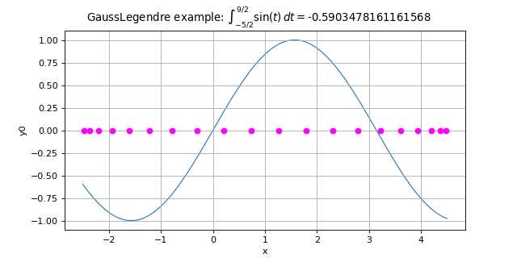

GaussLegendre¶
(Source code, png)

- class GaussLegendre(*args)¶
Tensorized integration algorithm of Gauss-Legendre.
- Available constructors:
GaussLegendre(dimension=1)
GaussLegendre(discretization)
- Parameters:
- dimensionint,

The dimension of the functions to integrate. The default discretization is GaussLegendre-DefaultMarginalIntegrationPointsNumber in each dimension, see
ResourceMap.- discretizationsequence of int
The number of nodes in each dimension. The sequence must be non-empty and must contain only positive values.
- dimensionint,
Notes
The Gauss-Legendre algorithm enables to approximate the definite integral:

with
 ,
,  using a fixed tensorized Gauss-Legendre approximation:
using a fixed tensorized Gauss-Legendre approximation:![\int_{\vect{a}}^\vect{b} f(\vect{t})\di{\vect{t}} = \sum_{\vect{n}\in \cN}\left(\prod_{i=1}^d w^{N_i}_{n_i}\right)f(\xi^{N_1}_{n_1},\dots,\xi^{N_d}_{n_d})]()
where
 is the
is the  th node of the
th node of the  -points Gauss-Legendre 1D integration rule and
-points Gauss-Legendre 1D integration rule and  the associated weight.
the associated weight.Examples
Create a Gauss-Legendre algorithm:
>>> import openturns as ot >>> algo = ot.GaussLegendre(2) >>> algo = ot.GaussLegendre([2, 4, 5])
Methods
Accessor to the object's name.
Accessor to the discretization of the tensorized rule.
getId()Accessor to the object's id.
getName()Accessor to the object's name.
getNodes()Accessor to the integration nodes.
Accessor to the object's shadowed id.
Accessor to the object's visibility state.
Accessor to the integration weights.
hasName()Test if the object is named.
Test if the object has a distinguishable name.
integrate(*args)Evaluation of the integral of
 on an interval.
on an interval.integrateWithNodes(function, interval)Evaluation of the integral of
on an interval.setName(name)Accessor to the object's name.
setShadowedId(id)Accessor to the object's shadowed id.
setVisibility(visible)Accessor to the object's visibility state.
- __init__(*args)¶
- getClassName()¶
Accessor to the object’s name.
- Returns:
- class_namestr
The object class name (object.__class__.__name__).
- getDiscretization()¶
Accessor to the discretization of the tensorized rule.
- Returns:
- discretization
Indices The number of integration point in each dimension.
- discretization
- getId()¶
Accessor to the object’s id.
- Returns:
- idint
Internal unique identifier.
- getName()¶
Accessor to the object’s name.
- Returns:
- namestr
The name of the object.
- getNodes()¶
Accessor to the integration nodes.
- Returns:
- nodes
Sample The tensorized Gauss-Legendre integration nodes on
![[0,1]^d]() where
where  is the dimension of the integration algorithm.
is the dimension of the integration algorithm.
- nodes
- getShadowedId()¶
Accessor to the object’s shadowed id.
- Returns:
- idint
Internal unique identifier.
- getVisibility()¶
Accessor to the object’s visibility state.
- Returns:
- visiblebool
Visibility flag.
- getWeights()¶
Accessor to the integration weights.
- Returns:
- weights
Point The tensorized Gauss-Legendre integration weights on
where is the dimension of the integration algorithm.
- weights
- hasName()¶
Test if the object is named.
- Returns:
- hasNamebool
True if the name is not empty.
- hasVisibleName()¶
Test if the object has a distinguishable name.
- Returns:
- hasVisibleNamebool
True if the name is not empty and not the default one.
- integrate(*args)¶
Evaluation of the integral of
on an interval.- Available usages:
integrate(f, interval)
- Parameters:
- Returns:
- value
Point Approximation of the integral.
- value
Examples
>>> import openturns as ot >>> f = ot.SymbolicFunction(['x'], ['sin(x)']) >>> a = -2.5 >>> b = 4.5 >>> algoGL = ot.GaussLegendre([10]) >>> value = algoGL.integrate(f, ot.Interval(a, b))[0] >>> print(value) -0.590...
- integrateWithNodes(function, interval)¶
Evaluation of the integral of
on an interval.- Parameters:
- Returns:
Examples
>>> import openturns as ot >>> f = ot.SymbolicFunction(['x'], ['sin(x)']) >>> a = -2.5 >>> b = 4.5 >>> algoGL = ot.GaussLegendre([10]) >>> value, nodes = algoGL.integrateWithNodes(f, ot.Interval(a, b)) >>> print(value[0]) -0.590... >>> print(nodes) 0 : [ -2.40867 ] 1 : [ -2.02772 ] 2 : [ -1.37793 ] 3 : [ -0.516884 ] 4 : [ 0.47894 ] 5 : [ 1.52106 ] 6 : [ 2.51688 ] 7 : [ 3.37793 ] 8 : [ 4.02772 ] 9 : [ 4.40867 ]
- setName(name)¶
Accessor to the object’s name.
- Parameters:
- namestr
The name of the object.
- setShadowedId(id)¶
Accessor to the object’s shadowed id.
- Parameters:
- idint
Internal unique identifier.
- setVisibility(visible)¶
Accessor to the object’s visibility state.
- Parameters:
- visiblebool
Visibility flag.

{kind=link}